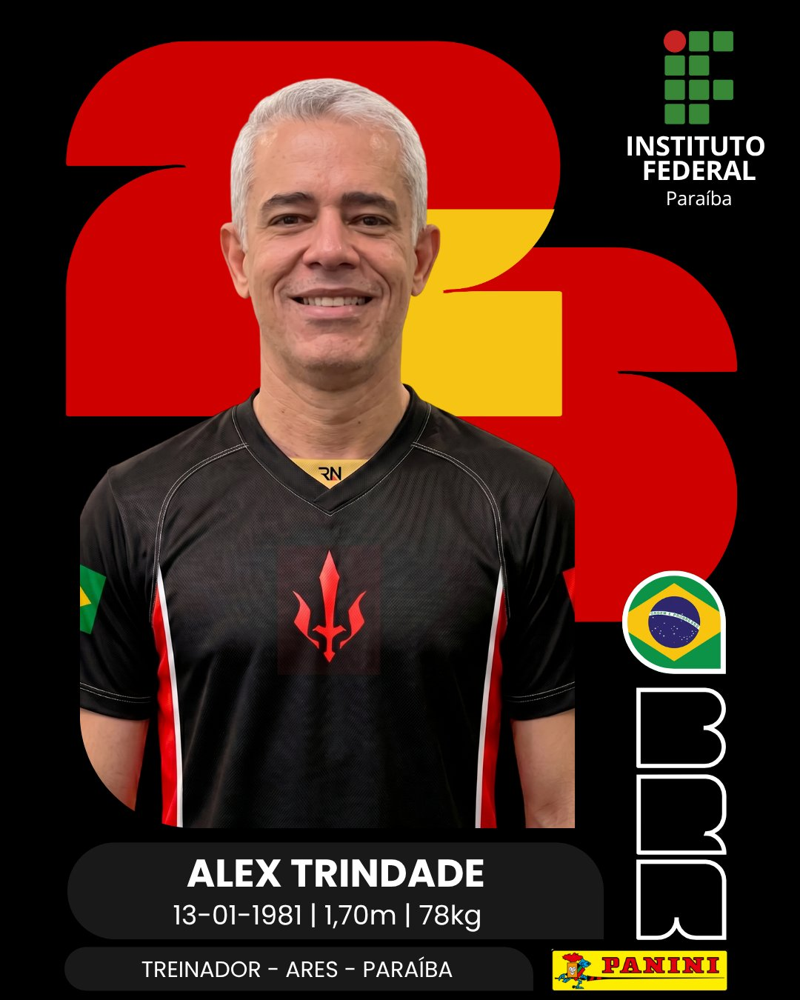

Os guerreiros por trás da armadura
NOSSA EQUIPE
Estudantes do interior do Nordeste que chegaram ao cenário mundial através de tecnologia, persistência e trabalho em equipe.
Liderança
TREINADOR

ALEXSANDRO TRINDADE SALES DA SILVA
Treinador — Ares Robótica · Paraíba
Presente desde a fundação da Equipe Ares em 2022, Alex Trindade é a espinha dorsal da equipe. Sob sua orientação, a Ares conquistou o bicampeonato estadual da OBR, múltiplos títulos nacionais e três convocações para representar o Brasil em competições internacionais. Sua liderança técnica e humana é o que mantém a equipe unida e focada em cada desafio.
Seleção Escalada 2025
INTEGRANTES

TOMÁS FREITAS
Capitão · Engenheiro

FERNANDO OTTO
Ex-Capitão · Programador

JEFFERSSON KAUAN
Programador